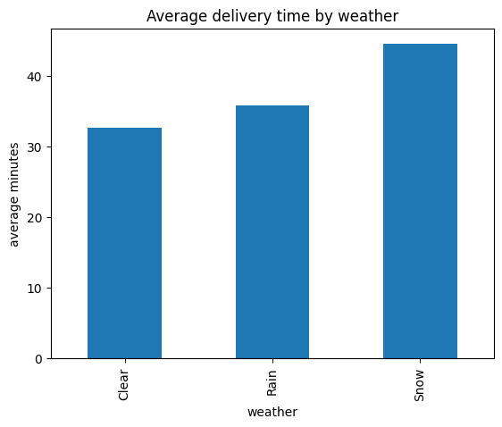

14. Guided project: delivery times#

In the chapter A first machine-learning example, we watched the whole machine-learning workflow from the outside. Now we do it ourselves, on new data, with every tool that the book has taught. We go step by step: each step explains what we do and why, and gives code that runs. At the end, we say what the result means for the business.
In this chapter, you will learn to:
inspect and explore a new data file, and find the facts that go with slow deliveries;
fill missing values, turn text columns into numbers, and choose
Xandy;train and compare three models with the code pattern of the chapter A first machine-learning example;
explain the result to a manager: what the error in minutes means, and what makes a delivery slow.
import pandas as pd
import matplotlib.pyplot as plt
from sklearn.model_selection import train_test_split
from sklearn.linear_model import LinearRegression
from sklearn.tree import DecisionTreeRegressor
from sklearn.ensemble import RandomForestRegressor
from sklearn.metrics import mean_absolute_error
DATA_URL = "https://raw.githubusercontent.com/y-rosenthal/yr-pre-ml/main/data/"
The first cell imports everything that this chapter uses: pandas, matplotlib for one chart, and the same five scikit-learn tools as in the chapter A first machine-learning example.
14.1. The business question#
A food-delivery company shows every customer a promised time when they order: “your food arrives in 35 minutes”. If the promise is too long, customers order somewhere else. If it is too short, the food arrives late and customers are unhappy.
The company has a record of 500 past deliveries. It asks us: can we predict how many minutes a delivery will take, from what we know when the order is placed? And a second question: what makes a delivery slow?
14.2. Step 1: read and inspect the data#
deliveries = pd.read_csv(DATA_URL + "deliveries.csv")
deliveries.head()
| distance_km | items | time_of_day | weather | driver_years | minutes | |
|---|---|---|---|---|---|---|
| 0 | 2.2 | 1 | Evening | Snow | 12.0 | 30.1 |
| 1 | 8.1 | 7 | Evening | Snow | 8.0 | 54.4 |
| 2 | 1.8 | 7 | Afternoon | Rain | 14.0 | 21.8 |
| 3 | 14.3 | 3 | Morning | Rain | 7.0 | 58.3 |
| 4 | 6.8 | 1 | Evening | Rain | 13.0 | 29.6 |
Each row is one delivery. The appendix The datasets describes the columns:
distance_km: the distance from the restaurant to the customer, in kilometers;items: the number of items in the order;time_of_day:Morning,AfternoonorEvening;weather:Clear,RainorSnow;driver_years: the driver’s experience, in years;minutes: how long the delivery took. This is the target, the column we want to predict.
How big is the table?
deliveries.shape
(500, 6)
500 deliveries and 6 columns. Next, info() shows the type of each column and how many values are present:
deliveries.info()
<class 'pandas.core.frame.DataFrame'>
RangeIndex: 500 entries, 0 to 499
Data columns (total 6 columns):
# Column Non-Null Count Dtype
--- ------ -------------- -----
0 distance_km 500 non-null float64
1 items 500 non-null int64
2 time_of_day 500 non-null object
3 weather 482 non-null object
4 driver_years 470 non-null float64
5 minutes 500 non-null float64
dtypes: float64(3), int64(1), object(2)
memory usage: 23.6+ KB
Two columns have fewer than 500 non-null values: weather has 482 and driver_years has 470. So 18 weather
values and 30 driver experiences are missing. time_of_day and weather hold text: their dtype is object (or
str in pandas 3). We have to deal with both problems before a model can learn.
describe() summarizes the number columns:
deliveries.describe()
| distance_km | items | driver_years | minutes | |
|---|---|---|---|---|
| count | 500.000000 | 500.000000 | 470.000000 | 500.000000 |
| mean | 5.195800 | 6.656000 | 7.470213 | 35.013400 |
| std | 3.262221 | 3.537045 | 4.572814 | 12.244069 |
| min | 0.400000 | 1.000000 | 0.000000 | 6.100000 |
| 25% | 2.800000 | 4.000000 | 3.000000 | 25.850000 |
| 50% | 4.600000 | 7.000000 | 7.000000 | 33.650000 |
| 75% | 7.000000 | 10.000000 | 11.000000 | 41.850000 |
| max | 17.500000 | 12.000000 | 15.000000 | 74.500000 |
Look at the minutes column first. A delivery takes 35 minutes on average (the mean is 35.0134), but the times go
from 6.1 to 74.5 minutes, and half of them are 33.65 minutes or less (the 50% row). The distances go from 0.4 to
17.5 km. If the company promised 35 minutes to everyone, many promises would be far off. That is why it wants a
prediction for each order.
14.3. Step 2: explore the data#
Before we build a model, we look at the data with the tools of pandas. First, how often does each kind of weather and each time of day occur?
print(deliveries["weather"].value_counts())
print(deliveries["time_of_day"].value_counts())
weather
Clear 286
Rain 139
Snow 57
Name: count, dtype: int64
time_of_day
Evening 192
Afternoon 177
Morning 131
Name: count, dtype: int64
Most deliveries happen in clear weather (286), then rain (139), then snow (57); value_counts() does not count the
18 missing values. Evening is the busiest time of day (192 deliveries), and morning the quietest (131).
Now the interesting question: do these facts go with longer deliveries? We group the deliveries by weather and compute the average minutes in each group:
by_weather = deliveries.groupby("weather")["minutes"].mean().round(1)
by_weather
weather
Clear 32.7
Rain 35.8
Snow 44.5
Name: minutes, dtype: float64
Deliveries in snow take 44.5 minutes on average, almost 12 minutes more than in clear weather (32.7). Rain adds about 3 minutes (35.8). The same for the time of day, sorted from fastest to slowest:
by_time = deliveries.groupby("time_of_day")["minutes"].mean().round(1)
by_time.sort_values()
time_of_day
Morning 32.3
Afternoon 34.3
Evening 37.5
Name: minutes, dtype: float64
Morning deliveries are the fastest (32.3 minutes) and evening deliveries the slowest (37.5 minutes), about 5 minutes more.
A chart makes the weather effect easy to see:
by_weather.plot(kind="bar")
plt.title("Average delivery time by weather")
plt.xlabel("weather")
plt.ylabel("average minutes")
plt.show()

The snow bar stands out. A manager understands this chart at once, without reading any numbers.
Distance is a number, not a group, so we cannot group by it directly. Instead, we compare the long deliveries with
the short ones, with a mask and loc (as in the chapter Filtering rows):
far = deliveries["distance_km"] > 7
print("deliveries over 7 km:", far.sum())
print("over 7 km, average minutes: ", round(deliveries.loc[far, "minutes"].mean(), 1))
print("7 km or less, average minutes:", round(deliveries.loc[~far, "minutes"].mean(), 1))
deliveries over 7 km: 120
over 7 km, average minutes: 49.1
7 km or less, average minutes: 30.6
The 120 deliveries over 7 km take 49.1 minutes on average, against 30.6 minutes for the others: more than 18 minutes more. Of all the differences we have seen, distance is the biggest.
Try it: change
7to3and run the cell again. How do the two averages change? Then compare the orders with many items and few items: usedeliveries["items"] > 6as the mask.
14.4. Step 3: fill the missing values#
info() showed 18 missing weather values and 30 missing driver experiences. How many deliveries have at least one
missing value?
print("rows with a missing value:", deliveries.isna().any(axis=1).sum())
rows with a missing value: 47
We could drop these 47 rows, as in the chapter A first machine-learning example. But think about how the model will be used. A new order comes in, and the weather is unknown or the driver’s experience was not recorded. The company still has to promise a time. A model that learned only from complete rows has never seen such an order. So here we fill the missing values instead (the chapter Preparing data for machine learning explains both ways):
driver_yearsis a number: we fill it with the median, the middle value (the50%row ofdescribe()). It is the usual choice for a number column (the chapter Preparing data for machine learning explains why). Here the mean (7.5) and the median (7.0) are close, so the choice matters little.weatheris text: we fill it with a new value,"Unknown". Then the model can learn how such deliveries behave.
We work on a copy, so that deliveries keeps the original data:
clean = deliveries.copy()
median_years = clean["driver_years"].median()
print("median driver_years:", median_years)
clean["driver_years"] = clean["driver_years"].fillna(median_years)
clean["weather"] = clean["weather"].fillna("Unknown")
clean.isna().sum()
median driver_years: 7.0
distance_km 0
items 0
time_of_day 0
weather 0
driver_years 0
minutes 0
dtype: int64
The median is 7.0 years. Now no value is missing, and we kept all 500 deliveries.
Common mistake: writing
clean["weather"].fillna("Unknown")on its own line.fillnareturns a new column and does not changeclean. Always assign the result back:clean["weather"] = clean["weather"].fillna(...).
14.5. Step 4: turn text into numbers#
The models need numbers. pd.get_dummies replaces each text column with one 0/1 column for each of its values:
clean = pd.get_dummies(clean, columns=["time_of_day", "weather"], dtype=int)
list(clean.columns)
['distance_km',
'items',
'driver_years',
'minutes',
'time_of_day_Afternoon',
'time_of_day_Evening',
'time_of_day_Morning',
'weather_Clear',
'weather_Rain',
'weather_Snow',
'weather_Unknown']
The table now has 11 columns instead of 6. time_of_day became three columns, and weather became four: Clear,
Rain, Snow, and the Unknown that we added. Here are the weather columns of the first rows:
clean[["weather_Clear", "weather_Rain", "weather_Snow", "weather_Unknown"]].head()
| weather_Clear | weather_Rain | weather_Snow | weather_Unknown | |
|---|---|---|---|---|
| 0 | 0 | 0 | 1 | 0 |
| 1 | 0 | 0 | 1 | 0 |
| 2 | 0 | 1 | 0 | 0 |
| 3 | 0 | 1 | 0 | 0 |
| 4 | 0 | 1 | 0 | 0 |
Each row has exactly one 1. The first two deliveries were in snow, and the next three in rain, as in the original table.
14.6. Step 5: choose X and y#
The target y is the column minutes. The predictors X are all the other columns:
X = clean.drop(columns="minutes")
y = clean["minutes"]
X.shape, y.shape
((500, 10), (500,))
X has 500 rows and 10 predictor columns, and y has 500 values, one for each row of X.
Common mistake: writing
X = cleanand forgetting to dropminutes. Then the answer is among the predictors, and the model “predicts” perfectly by copying it. With a new order,minutesis exactly what we do not know, so such a model is useless.
14.7. Step 6: split, train and measure#
From here on, the code is the code of the chapter A first machine-learning example. Only the names of the data changed. First, we keep 25% of the deliveries aside for testing:
X_train, X_test, y_train, y_test = train_test_split(X, y, test_size=0.25, random_state=42)
X_train.shape, X_test.shape
((375, 10), (125, 10))
375 deliveries to learn from, and 125 to test on. Now we train the three models on the training set (Colab shows a short description of the last model under the cell):
linear = LinearRegression()
linear.fit(X_train, y_train)
tree = DecisionTreeRegressor(max_depth=5, random_state=42)
tree.fit(X_train, y_train)
forest = RandomForestRegressor(n_estimators=200, random_state=42)
forest.fit(X_train, y_train)
RandomForestRegressor(n_estimators=200, random_state=42)In a Jupyter environment, please rerun this cell to show the HTML representation or trust the notebook.
On GitHub, the HTML representation is unable to render, please try loading this page with nbviewer.org.
RandomForestRegressor(n_estimators=200, random_state=42)
Each model predicts the 125 test deliveries, and we compute the mean absolute error (MAE) of each, in minutes:
for name, model in [("linear regression", linear), ("decision tree", tree), ("random forest", forest)]:
predictions = model.predict(X_test)
error = mean_absolute_error(y_test, predictions)
print(f"{name:18} MAE: {error:.1f} minutes")
linear regression MAE: 3.0 minutes
decision tree MAE: 5.4 minutes
random forest MAE: 3.7 minutes
In the f-string, {name:18} pads the name with spaces to 18 characters, so that the numbers line up, and
{error:.1f} shows the error with one decimal.
This time, linear regression wins, with an MAE of 3.0 minutes. The random forest is second (3.7 minutes), and the decision tree is clearly last (5.4 minutes): it sorts the deliveries into groups with yes/no questions and predicts the same time for every delivery in a group. So its predictions go up in steps, while the real time grows a little with every kilometer.
Why does the simplest model win here, when the forest won in the chapter A first machine-learning example? A likely reason: a delivery time is roughly a sum of parts: some minutes for each kilometer, a little more for each item, extra minutes in snow or in the evening. A straight-line formula is exactly a sum of parts, so it fits such data well. In that chapter, the spending was closer to a product (visits × basket), which a straight line follows only roughly. No model is best for every problem. That is why we try several and compare them on the test set.
Try it: change
max_depth=5tomax_depth=3, and then tomax_depth=8. Run the training cell and the MAE cell again each time. Does a deeper tree do better on the test set?
14.8. Step 7: what the result means for the business#
A manager does not want to hear “the MAE is 3.0”. We have to translate the numbers into decisions.
The promised time. An MAE of 3.0 minutes means that, on average, the prediction of the linear model is 3 minutes too short or too long. A delivery takes 35 minutes on average, so the error is less than a tenth of the time.
But should the app show the predicted time itself? Let’s count how often the real time was longer than the
prediction, that is, how often the food would arrive late. A comparison gives a mask, and the mean of a mask is the
share of True values (as in the chapter Comparisons and Boolean masks):
predictions = linear.predict(X_test)
late = y_test > predictions
print("share late:", late.mean())
share late: 0.472
47.2% of the test deliveries took longer than predicted. That makes sense: a good prediction is too high about as often as it is too low. A promise that is broken almost half of the time is a bad promise. So the company should add a few minutes of safety to each prediction. With 5 extra minutes:
late_5 = y_test > predictions + 5
print("share late:", late_5.mean())
share late: 0.048
Now only 4.8% of the test deliveries are late, 6 out of 125. The company can choose the safety margin: a longer margin breaks fewer promises, but shows longer times to customers. The MAE tells it how big the margin has to be: a few minutes, not half an hour.
Try it: change
5to3, and then to8. How does the share of late deliveries change?
What makes a delivery slow. The exploration in step 2 answers the second question:
Distance matters most: deliveries over 7 km took 49.1 minutes on average, against 30.6 minutes for shorter ones.
Snow adds a lot: 44.5 minutes on average, against 32.7 minutes in clear weather. Rain adds about 3 minutes.
The evening is the slowest time of day: 37.5 minutes, against 32.3 minutes in the morning.
The model already uses these facts in its predictions. For planning, they suggest more: expect slow deliveries on snowy days, and perhaps add drivers in the evening, the busiest and slowest time of day. Question 5 below checks the importance of distance in another way: it trains the models without it.
14.9. Summary#
We did the whole workflow on new data:
Read and inspect:
pd.read_csv(...),head(),shape,info()(missing values and text columns),describe().Explore:
value_counts(),groupby("weather")["minutes"].mean(), a bar chart with.plot(kind="bar"), and a mask withlocto compare long and short deliveries.Clean:
fillna(median)for a number column,fillna("Unknown")for a text column; we filled instead of dropping because the model must also handle new orders with missing values.Prepare:
pd.get_dummies(..., columns=[...], dtype=int);X = clean.drop(columns="minutes"),y = clean["minutes"].Model:
train_test_split(..., test_size=0.25, random_state=42), three models,fit,predict,mean_absolute_error. Here linear regression won.Interpret: translate the MAE into a business decision (a safety margin for the promised time), and use the exploration to say what makes deliveries slow.
14.10. Practice questions#
14.10.1. Question 1 (Easy)#
How many of the 500 deliveries took more than an hour? What share of all deliveries is that?
Answer
18 deliveries took more than 60 minutes, a share of 0.036 (3.6%). A mask counts with sum() and gives a share with
mean().
over_an_hour = deliveries["minutes"] > 60
print(over_an_hour.sum())
print(over_an_hour.mean())
# Write your answer here
14.10.2. Question 2 (Easy)#
A manager asks: “What does an MAE of 3.0 minutes mean, and which model should we use?” Answer in two sentences.
Answer
On average, the model’s predicted delivery time is about 3 minutes too long or too short. We should use linear regression, because it had the smallest error on deliveries that it had never seen (3.0 minutes, against 3.7 for the random forest and 5.4 for the decision tree).
# Write your answer here
14.10.3. Question 3 (Medium)#
Which combination of time of day and weather has the slowest deliveries on average? Group by both columns.
Answer
Evening deliveries in snow are the slowest, at 47.8 minutes on average. Sorting the result puts the slowest combinations at the bottom.
by_both = deliveries.groupby(["time_of_day", "weather"])["minutes"].mean().round(1)
by_both.sort_values()
# Write your answer here
14.10.4. Question 4 (Medium)#
Perhaps snow deliveries are slow only because they happen to be longer trips? Compute the average distance_km for
each kind of weather. Does it explain the snow effect?
Answer
No. The average distance is about the same in every weather (5.5 km in clear weather, 4.8 km in rain, 4.9 km in snow). Snow deliveries are not longer trips, so the extra minutes come from the snow itself.
deliveries.groupby("weather")["distance_km"].mean().round(1)
# Write your answer here
14.10.5. Question 5 (Medium)#
Train the three models again without the predictor distance_km, on the same training and test deliveries, and
print their MAEs. What does the result say about distance?
Answer
drop(columns=...) removes the column from the training and the test predictors; the rows stay the same. Without
distance, every model gets much worse: linear regression goes from 3.0 to 9.2 minutes. Distance is the most
important fact about a delivery, as the exploration suggested.
X_train_nd = X_train.drop(columns="distance_km")
X_test_nd = X_test.drop(columns="distance_km")
models = [("linear regression", LinearRegression()),
("decision tree", DecisionTreeRegressor(max_depth=5, random_state=42)),
("random forest", RandomForestRegressor(n_estimators=200, random_state=42))]
for name, model in models:
model.fit(X_train_nd, y_train)
error = mean_absolute_error(y_test, model.predict(X_test_nd))
print(f"{name:18} MAE: {error:.1f} minutes")
# Write your answer here
14.10.6. Question 6 (Hard)#
Instead of filling the missing values, drop the rows that have one. Then do steps 4 to 6 again (dummies, X and
y, split with random_state=42, the three models, MAE). Compare the MAEs with the ones above.
Answer
453 deliveries remain, and 114 of them are in the test set. The results are close to the ones above: linear regression is a little worse (3.2 against 3.0 minutes), and the random forest a little better (3.4 against 3.7). The test deliveries are not the same, so the numbers are not exactly comparable. The main reason to fill is not the MAE: a model trained on complete rows only has never seen an order with unknown weather, and the company must still promise a time for such orders.
dropped = deliveries.dropna()
dropped = pd.get_dummies(dropped, columns=["time_of_day", "weather"], dtype=int)
X2 = dropped.drop(columns="minutes")
y2 = dropped["minutes"]
X2_train, X2_test, y2_train, y2_test = train_test_split(X2, y2, test_size=0.25, random_state=42)
print(X2.shape, X2_test.shape)
models = [("linear regression", LinearRegression()),
("decision tree", DecisionTreeRegressor(max_depth=5, random_state=42)),
("random forest", RandomForestRegressor(n_estimators=200, random_state=42))]
for name, model in models:
model.fit(X2_train, y2_train)
error = mean_absolute_error(y2_test, model.predict(X2_test))
print(f"{name:18} MAE: {error:.1f} minutes")
# Write your answer here
14.10.7. Question 7 (Hard)#
In the chapter What does a model learn?, a straight line had one number b (coef_) for its predictor. Our
linear model has one number for each of its 10 predictors. Show them as a Series with the predictor names as the
index. How many minutes does each extra kilometer add? And each extra item?
Answer
linear.coef_ is an array with one number for each column of X, in the same order. Each kilometer adds about
3.22 minutes, and each item about 0.88 minutes. The snow column has the largest weather number (7.57) and the clear
column the smallest (-5.93), which agrees with the exploration. Read the weather numbers together: only the
differences between them mean something. A delivery in snow takes about 7.57 - (-5.93) = 13.5 minutes more than
one in clear weather, when everything else is the same.
numbers = pd.Series(linear.coef_, index=X.columns).round(2)
numbers
# Write your answer here
14.10.8. Question 8 (Challenge)#
A new order comes in: 6 km, 3 items, in the evening, in snow, with a driver who has 2 years of experience. Use the
linear model to predict its delivery time, and add 5 minutes of safety. Hint: build a DataFrame with one row and
the same 10 columns as X, in the same order.
Answer
The new row needs a value for every column of X: 1 in time_of_day_Evening and weather_Snow, 0 in the other
dummy columns. predict returns an array with one value; [0] takes it.
new_order = pd.DataFrame({
"distance_km": [6.0], "items": [3], "driver_years": [2.0],
"time_of_day_Afternoon": [0], "time_of_day_Evening": [1], "time_of_day_Morning": [0],
"weather_Clear": [0], "weather_Rain": [0], "weather_Snow": [1], "weather_Unknown": [0],
})
predicted = linear.predict(new_order)[0]
print("predicted minutes:", round(predicted, 1))
print("promised minutes: ", round(predicted + 5))
# Write your answer here